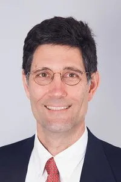

About James A. Jacobs
JAMES A. JACOBS
Ph.D., P.G., C.H.G., C.P.G., C.Pet.G., FGS, ToR QISP, ToR QSD/QSP
Principal Geologist
Education
- M.A. Geology, University of Texas, Austin, Texas
- B.A. Geology, English, Franklin and Marshall College, Lancaster, Pennsylvania
Professional Summary
James Jacobs has more than thirty-five years of experience as a geologist. He is a certified hydrogeologist, professional geologist, licensed well driller and general engineering contractor. His most recent work includes forensic analysis related to subsurface events, including pipe breaks, contaminant spills, oil and gas resource valuation estimates, and groundwater contamination. He has worked on a variety of producing and redeveloped oil field properties, EPA Superfund sites, military bases, agricultural and industrial properties. Since 1990, he has been a co-owner of an environmental-engineering consulting and contracting company, where he has performed more than 1,000 projects.
As a publicly elected community services district board member since 2003, he has evaluated numerous environmental challenges, solved sustainability problems, and worked with others as a team leader and member to develop agency policies. He has been involved with the public process of goal setting, data acquisition, development of workplans, and implementation of field projects. He has promoted and supported sustainable environmental practices within the agency, a certified green business which now offers residents recycling of electronic waste, fluorescent bulbs, medicines, batteries, paper and cardboard. In an effort to minimize local groundwater degradation, in 2009, 1 million less lbs of waste were processed by the agency than in 2006. In 2013, the agency won the Marin County Green Business of the Year award due to the successful recycling efforts and reduction in wastes shipped to the local landfills. For mentoring students, he is the AIPG Sponsor of the UC Davis Geology Student Section (since 2010), Sonoma State University Geology Student Section (since 2016), and the University of California at Santa Cruz (since 2020). He is the sponsor of the first AIPG International Student Chapter at SRTM University in Nanded, India (since 2017).
Selected Projects
- Oil and Gas Field Environmental Projects – Performed Phase I Environmental Assessments at oil and gas production facilities. The environmental work was associated with site restoration, property transfer back to the land owners, bank refinancing and environmental regulatory responses to site conditions. Site remediation occurred on several sites. Cost estimates were prepared for settlement purposes. Assessment and remediation of hydrocarbons at hundreds of sites was designed and implemented over the past twenty years.
- Site Remediation and Closure – Project Manager of dozens of underground tank removal projects. After the initial assessment, dozens of soil and groundwater remediation projects in California were performed for properties impacted with petroleum hydrocarbons or chlorinated solvents. Many of these projects were closed using in-situ remediation methods. Some of these projects used risked based corrective action (RBCA) models or risk assessment data showing limited exposures. From this approach, dozens of sites were closed.
- Bioremediation of Contaminated Soils – Project manager for bioremediation of approximately 800 cubic yards of hydrocarbon-contaminated soils. Original diesel contamination exceeded 8,000 parts per million. After two months the levels of diesel in the soil were below 350 parts per million. On-site treatment lowered the disposal costs by allowing for Class III landfill disposal rates instead of Class II rates.
- Bioremediation of Diesel and Gasoline Contaminated Aquifer – Developed above ground treatment equipment and supervised the installation of treatment equipment for an aerobic bioremediation treatment system for a rental car agency at the San Francisco International Airport. The treatment was part of a regulatory driven requirement on the site. Treatment of the groundwater was performed so that the treated effluent was disposed directly into the sanitary sewer.
- In-Situ Chemical Oxidation of Diesel Free-Product – Directed the contracting portion of the project to inject hydrogen peroxide and acetic acid at high concentrations to remove diesel free-product near a well in Oakland, California. After the treatment event, the free product was reduced from 5 cm to 0 cm.
- Phase II Subsurface Investigations – Program director and project manager responsible for dozens of Phase II subsurface investigations of commercial, agricultural, industrial and residential properties. The projects involve preparing work plans, supervising the drilling of borings and installation of Geoprobe® borings and monitoring wells, well development and sampling and report preparation.
- Soil Remediation - San Francisco, California – Directed removal of underground storage tanks beneath the sidewalk and undercutting a major street in the city. Subsequent remediation was required by the regulators and was designed and performed using a three-foot diameter bucket auger rig to drill out the contaminated areas adjacent to the street and over a BART tunnel. The bucket auger holes were filled immediately after being drilled with a light neat cement grout. Supervised all field activities. The client was a contractor.
- Underground Storage Tank Removal and Soil Remediation – Permitted and supervised two 2,000 gallon underground storage tanks containing diesel and gasoline. After the tanks were removed, 20,000 gallons of highly contaminated water containing free product was removed from the former tank area. Soil remediation was performed by over-excavation of approximately 500 cubic yards. Reports were submitted and site closure is pending. The project from start to completion was less than two weeks. The client was a major bank.
- Water Procurement – As a publicly elected official and President of the local services district board, Jacobs oversaw the purchase of irrigation water for local park facilities. Water rates at various use tiers were examined and Jacobs led the board discussion to select a favorable long-term rate schedule for irrigating the landscaping at area parks.
- Water Treatment Planning – Working with the board, and the two sewer plants, Mr. Jacobs participated on the board evaluation and discussion in the negotiation of a long-term (10 year) contract with one of the treatment plants at favorable rates. Part of the agreement included a successful financing of the required improvements.
- Pipeline Improvement Projects and Financing – As the president of the board of directors of the Tamalpais Community Service District, Jacobs worked with the general manager and board to prioritize the sewer repair projects on the 29-mile sewer transportation network in the district. The district and the nearby treatment plants include several pump stations and other aging facilities. Mr. Jacobs reviewed several financing options for the projects, and led the board to approve the rate hikes. Later, a $3,000,000 loan at 4.5% interest was obtained to pay for the project, allowing for a more gradual increase in the sewer rates for ratepayers.
- Regulatory Guidelines for Water Treatment – As a Fulbright award winner, Mr. Jacobs taught at the University of the West Indies in Kingston, teaching a graduate class in Environmental Engineering. In addition, he taught workshops related to establishing water treatment goals in Jamaica. Participants included regulatory officials, environmental consultants, students, petroleum company employees and others. Mr. Jacobs also organized for others to participate in the teaching of the materials. Continued training is proposed for upcoming workshops in Jamaica.
- In-Situ Chemical Geofixation of Chromium (VI) – Directed and performed the contracting portion of the project to inject calcium polysulfide for chromium (VI) at a former wood treating plant in northern California. The chromated copper arsenic (CCA) chemicals found on-site included the arsenic (V) oxide, chromium (VI) oxide and copper (II) oxide used in the wood treating process. The CCA wood was used in the construction of cooling towers. Calcium polysulfide was used as the reducing agent, which successfully lowered the chromium (VI) concentration at the site over a period of 18 months.
- In-Situ Perchlorate Study – Developed with the client, a field pilot study program for a rocket fuel burn test site in Hollister, California. The project was designed to inject water into the shallow vadose zone at high pressure to solubilize the perchlorate and to pump it out. The lithology at the site was clay. Groundwater was shallow (10-15 feet below ground surface). The water was injected using a high-pressure pump system connected to specialized rods driven into the ground by direct push rigs. Results indicated that although the approach was reasonable, at this site, the clays were too tight to allow for significant desorption of the perchlorate from the clay matrix.
- Wetlands Sampling Project – Developed sampling plan for a wetlands sampling project and designed tooling and applications for a limited access, continuous core drilling program in a tidal wetlands. The samples included 5 soil samples to a maximum of 18 feet below ground surface and into peats and the Bay Mud to evaluate the presence of metal in the contaminated soils.
- Aquifer Mapping and Potentially Responsible Party Study – Task manager for Preferred Pathways study over a two square mile industrial area at a Federal Superfund Site in Santa Clara, California. Designed the aquifer mapping study using thousands of groundwater monitoring wells and soil boring reports to define underground channel systems. The information was used to facilitate installation of remedial measures. In conjunction with the Preferred Pathways Study, a Potentially Responsible Party (PRP) study was designed and performed in the area. After evaluating over 400 businesses, a ranking system was developed. The results from the project allowed the client to try to recover some of the costs of remediation.
- Environmental Impact Report – Designed and wrote the geology and hydrogeology sections of an environmental impact report for a proposed hazardous waste incineration facility in the San Francisco Bay Area. The client was a municipality.
- Geological Feasibility Study - King City, California – Performed a geological feasibility study and a natural hazard assessment for an 800-acre university site. Project included compilation of historic aerial photographs, geologic and historic maps, soil surveys and previous engineering and architectural studies. The client was a private university.
- Subsurface Drilling Programs – Supervised subsurface exploration drilling programs including interpretation and evaluation of data for vertical and lateral extent of contamination for hydrocarbons, volatile organic compounds and metals contamination at various sites. Designed and supervised the use of proprietary drilling tools for limited access drilling activities under canopies, in buildings, and in salt marshes. The clients include numerous consultants in the San Francisco Bay Area.